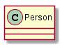
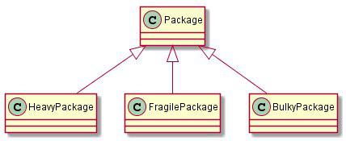
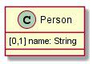
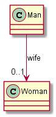
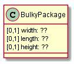
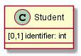
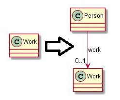
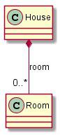
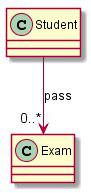
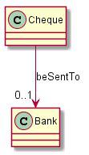

Bienvenido
Bienvenido a la Ayuda de SOCIO. Puedes trabajar con él en Telegram y Twitter. A continuación, encontrarás algunos consejos para su uso
Demostración de herramienta (SOCIO: Meta-modelado)
Demostración de Project Planner (Modelado)
Usando nuestro enfoque, hemos generado un chatbot llamado Project Planner para instanciar un modelo de Project usando Lenguaje Natural. En este vídeo, se muestra una breve interacción de dos usuarios con el bot.
Cómo funciona SOCIO en Telegram
Los bots de Telegran funcionan con comandos que empiezan con "/". Se puede enviar solo el comando y SOCIO pedirá los argumentos necesarios (figura 1), o se puede enviar el comando y los argumentos juntos (figura 2). SOCIO se puede usar en un grupo o en un chat individual.
Para usar el chatbot primero es necesario seleccionar un proyecto (/setproject, figura 2) para un chat o crear un nuevo proyecto (/newproject, figura 1). Después ya se pueden enviar las frases para crear el modelo. En el caso de los grupos, las frases de modelado se deben mandar usando el comando (/talk).
A continuación, se listan todos los comandos disponibles en SOCIO:
- /talk: chatea con el chatbot en lenguaje natural
- /undo: deshace el último mensaje
- /undoplus: deshace los últimos N mensajes
- /redo: rehace el último deshacer
- /redoplus: rehace los últimos N deshacer
- /remove: elimina un elemento específico del modelo
- /show: muestra el último estado del proyecto
- /setproject: selecciona un proyecto para trabajar
- /get: envia el modelo en formato ecore
- /validate: valida el modelo
- /help: devuelve la página web de ayuda
- /history: muestra el historial de mensajes y las estadisticas del proyecto
- /projects: muestra una lista de los proyectos existentes
- /projectmanager - gestiona los usuarios y la visibilidad de un proyecto.
- /newproject: crea y seleciona un proyecto
- /delproject: elimina un proyecto
- /start: inicializa el chatbot
Consejos
- Los tipos de atributos aceptados por el chatbot son: int, double, float, date y string
- Escribe correctamente: Es posible que SOCIO no te comprenda bien si cometes errores ortográficos.
- Si SOCIO no entiende algún sustativo, puedes añadir un determinante delante del sustantivo (por ejemplo, "add a door", "add the door", "add some door"...).
- Por lo general, SOCIO busca sinónimos y si un elemento del modelo coincide con el sustantivo o algunos sinónimos, realiza las acciones sobre ese elemento. Si se quiere añadir un elemento nuevo, se pueden usar las sentencias impertivas de añadir (p.e. "add a door"), que no busca sinónimos.
- Si SOCIO no te entiende correctamebte, puedes deshacer las acciones e intertar decirlo de otra manera o dividir la frase.
Ejemplos
Ahora veremos algunos ejemplos de frases que puedes usar y cómo. Siempre que se referencia algún elemento que no exista en el modelo, la primera acción del chatbot es crear dicho objeto
1. Add / Create / Make <Object>
Estas frases añaden nuevos elementos en SOCIO sin buscar sinónimos.
Create person. |
Add work in person. |
Add numeric age in person. |
|---|---|---|
 |
 |
 |
2. Remove / Erase <Object>
Además del comando /remove, también puede enviar una frase imperativa para eliminar los elementos que desee
Erase numeric age from person. |
Remove work from person. |
Remove person. |
|---|---|---|
|
3. <Object> to be <Object>
Packages can be bulky, heavy or fragile. |
Students and teachers are persons. |
|---|---|
 |
 |
Name of person is a text. |
The wife of a man is a woman. |
 |
 |
4. <Object> have / be characterized by / be identified by / be recognized by <Object>
Bulky packages are characterized by their width, length and height. |
Students have a numeric identifier. |
|---|---|
 |
 |
Medicines have an active ingredient. |
Person may has a work |
 |
 |
5. <Object> contain / be made of / be made up of / be made from / be composed / include <Object>
The house is made of rooms. |
Students contains a numeric identifier. |
|---|---|
 |
6. <Object> <verb> <Object>
Carriers can handle deliveries. |
The student passed the exams. |
The cheque is sent to the bank. |
|---|---|---|
 |
 |
 |